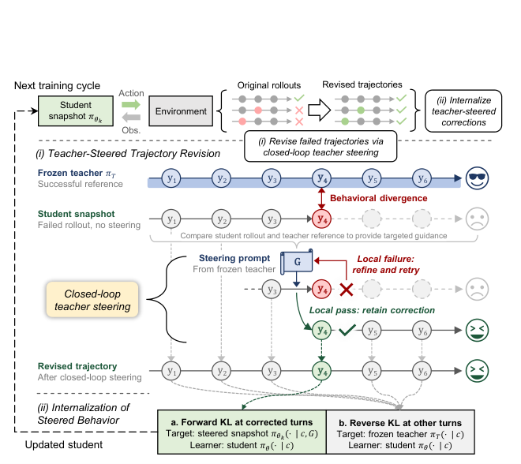

A driving instructor does not grab the wheel the moment a learner misses a turn. They rewind to just before the mistake, say "check the sign first", and let the learner drive it again. Only when the learner gets it right on their own does that lesson count. SteerDistill trains a 4-bit agent the same way.
운전 강사는 연수생이 길을 잘못 들었다고 바로 핸들을 뺏지 않는다. 실수 직전으로 되돌아가 "표지판부터 봐" 한마디만 하고 다시 운전하게 한다. 연수생이 스스로 제대로 해냈을 때만 그 장면을 수업으로 친다. SteerDistill은 4비트 에이전트를 이렇게 가르친다.
How it works: rewind, hint, verify, distill작동 방식은 되감기, 힌트, 검증, 증류
The teacher never takes over. It explains what was missed, and the student's own corrected turn becomes the training target.
교사는 대신 행동하지 않는다. 무엇을 놓쳤는지 설명할 뿐이고, 학생이 직접 고친 턴이 학습 목표가 된다.

- Find the divergence.어긋난 곳 찾기.Align a failed student run with a successful teacher run by environment state, not by action text, and stop at the first turn where the states differ.실패한 학생 실행과 성공한 교사 실행을 행동 문장이 아니라 환경 상태로 맞춰 보고, 상태가 처음 달라지는 턴에서 멈춘다.
- Steer in a loop.반복 조향.From the restored state, the teacher gives a structured hint and the student retries. Failed attempts feed back into a better hint, up to four tries.복원한 상태에서 교사가 구조화된 힌트를 주고 학생이 다시 시도한다. 실패하면 그 결과를 반영해 힌트를 고치고, 최대 네 번까지 반복한다.
- Internalize.내재화.Keep locally verified fixes even if the task later fails, then train the student without the hint so it acts this way unassisted.과제가 끝내 실패해도 그 자리에서 검증된 수정은 남긴다. 그다음 힌트 없이 학생을 학습시켜 혼자서도 그렇게 행동하게 만든다.
Key point: hints unlock what retries cannot핵심은 재시도로 못 찾는 답을 힌트가 연다는 것
At the turns where the quantized agent diverges, its own retries almost never hit the right action. A teacher hint raises that to most turns.
양자화 에이전트가 어긋난 턴에서 스스로 다시 해 보면 올바른 행동을 거의 찾지 못한다. 교사의 힌트가 있으면 대부분의 턴에서 찾는다.
Results: the gap widens at 2 bits결과는 2비트에서 더 벌어지는 격차
At 2-bit weights, every method loses ground, but SteerDistill keeps a 3.39 point lead over the next best.
가중치를 2비트로 낮추면 모든 방법이 밀리지만, SteerDistill은 차점보다 3.39점 앞선다.
At 4 bits the recovery is near complete on all three models.
4비트에서는 세 모델 모두 거의 완전히 회복한다.
| Model | BF16 | GPTQ | On-Policy QAD | QeRL | SteerDistill |
|---|---|---|---|---|---|
| Qwen3-8B | 53.54 | 46.36 | 50.38 | 51.00 | 53.18 |
| Qwen3.5-4B | 61.68 | 54.22 | 58.59 | 59.24 | 60.95 |
| Gemma 4 12B | 65.13 | 57.66 | 62.02 | 62.64 | 64.31 |
For compressed agents, find the turn where things go off track and supervise there. Random intervention turns scored below plain On-Policy QAD in the ablation, so the location matters as much as the teacher.압축 에이전트는 일이 틀어지는 턴을 찾아 그곳을 지도하자. 어블레이션에서 무작위 턴에 개입하면 평범한 On-Policy QAD보다도 낮았다. 교사만큼 개입 위치가 중요하다.
It needs a successful teacher run, a restorable environment state and a reliable local check. Teacher and student start from task-specific GRPO-tuned BF16 checkpoints, and no latency or memory numbers are reported.성공한 교사 실행, 되돌릴 수 있는 환경 상태, 믿을 만한 국소 검증이 모두 있어야 한다. 교사와 학생은 과제별로 GRPO 학습한 BF16 체크포인트에서 출발하고, 지연 시간이나 메모리 수치는 보고하지 않는다.